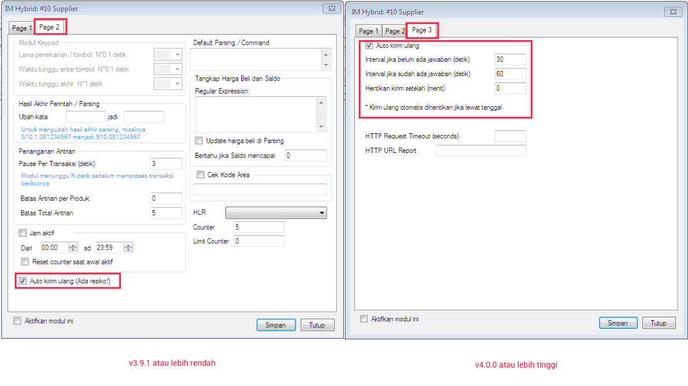

Auto Kirim Ulang (4.0.0)
Di modul IM Hybrid HTH dan IP Client sedari dulu telah dilengkapi dengan fitur Auto Kirim Ulang. Kegunaannya adalah manakala terdapat transaksi dengan status Menunggu Jawaban atau pending, akan otomatis dikirim ulang setiap 30 detik dalam rentang 10 menit dihitung dari tanggal entri transaksi, dimana interval tersebut built-in (tidak dapat diubah). Kabar baiknya, di versi 4.0.0 interval kirim ulang dapat Anda tentukan sendiri. Merasa butuh dengan fitur Auto Kirim Ulang bisa membeli OtomaX dengan klik disini sekarang.
Lokasi fitur ini berpindah, dari yang sebelumnya di modul IM Hybrid HTH atau IP Client -> klik kanan -> klik Setting -> tab: Page 2, berpindah ke tab: Page 3; perhatikan gambar berikut:

Apabila menggunakan OtomaX v4.0.0 atau lebih tinggi, Anda dapat menentukan interval kirim ulang sesuai kebutuhan. Terdapat 3 pilihan pengaturan:
-
Interval jika belum ada jawaban (detik)
Misalnya diisi 30, artinya manakala belum ada respon jawaban dari supplier, maka transaksi akan dikirim ulang setiap 30 detik. -
Interval jika sudah ada jawaban (detik)
Misalnya diisi 60, artinya manakala sudah ada jawaban dari supplier, maka transaksi akan dikirim ulang setiap 60 detik. -
Hentikan kirim setelah (menit)
Misalnya diisi 60, artinya manakala setelah 60 menit transaksi masih pending, maka tidak dikirim ulang lagi.
Jadi sekarang sudah tidak perlu capek - capek kirim ulang transaksi pending secara manual, sudah akan otomatis dikirim ulang oleh OtomaX. Selamat rebahan.